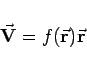
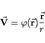
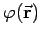
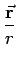
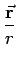

Inhalt Index DeskTop Bronstein

 Vektoranalysis und Feldtheorie Grundbegriffe der Feldtheorie Vektorfelder Wichtige Fälle vektorieller Felder
Vektoranalysis und Feldtheorie Grundbegriffe der Feldtheorie Vektorfelder Wichtige Fälle vektorieller Felder


Alle Vektoren  liegen auf Geraden, die durch einen bestimmten Punkt, das Zentrum, verlaufen (s. Abbildung).
liegen auf Geraden, die durch einen bestimmten Punkt, das Zentrum, verlaufen (s. Abbildung).
Wird der Koordinatenursprung in das Zentrum gelegt, dann kann das Feld mit Hilfe von
|  | (13.13a) |
definiert werden, da alle Vektoren die Richtung des Radiusvektors  besitzen. Oft ist es von Vorteil, dieses Feld durch die Formel
besitzen. Oft ist es von Vorteil, dieses Feld durch die Formel
|  | (13.13b) |
zu beschreiben, wobei  die Länge des Vektors  angibt und  der Einheitsvektor ist.
angibt und  der Einheitsvektor ist.